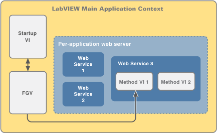

Parent Topic: Overview: Web-based Communication with a LabVIEW Application
LabVIEW uses one of two types of web servers to host Web services on the network:
The web server support for Web services differs depending on how you publish or run Web services. The following table shows which methods of publishing or running a Web service are supported for each type of web server.
| Method for Publishing/Running | NI Web Server | Application Web Server |
|---|---|---|
| Testing and debugging |
|
|
| Publishing through a package |
|
|
| Publishing through an installer |
|
|
| Publishing through a stand-alone application |
|
|
| Publishing as a stand-alone Web service |
|
|
The NI Web Server can host stand-alone Web services running on the host computer and Web services included in a package or a stand-alone application. You can run the NI Web Server without running the LabVIEW Development System. Once you enable the NI Web Server, it launches whenever you boot up the system. Before you run or publish a Web service, you might need to set up the NI Web Server.
 |
Note��Checking the status of Web services hosted on the NI Web Server is unsupported yet. |
Setting up the NI Web Server for Web Services
Configuring Web Services Security when Using the NI Web Server
The Application Web Server has three different modes depending on how you use it.
The system-wide Application Web Server can host stand-alone Web services and Web services included in an installer. The Application Web Server runs as an independent system service. You can enable and run the Application Web Server without running the LabVIEW Development System. Once you enable the Application Web Server, it launches whenever you boot up the system as�ApplicationWebServer.exe. Before you run or publish a Web service, you might need to set up the Application Web Server.
Complete the following steps to check the status of Web services hosted on the Application Web Server:
Setting up the Application Web Server for Web Services
Configuring Web Services Security when Using the Application Web Server
When you include a Web service in a LabVIEW stand-alone application, the application acts as a web server that hosts the Web service directly. LabVIEW unpublishes the Web service when the application exits.
The LabVIEW built application starts its own web server that hosts the included Web services. Because each VI in the Web service is running in the same context as the application�s startup VI, you can use simple function global variables (FGV) to pass data between them. The following illustration shows an example of how a LabVIEW built application starts its own web server.

You can configure SSL and the port you want to use to accept requests for the Web service when you specify to include the Web service in the application build specification.
Publishing a Web Service through a Stand-Alone Application
When you start debugging a Web service, LabVIEW places the Web service on a debugging server, where it behaves as if published on a target.
The default port that web clients use to send requests to the Web service in debugging mode is 8001. To use a different port for debugging, select Tools�Options, browse to the Web Server page, and modify the Debug HTTP Port option.
Testing and Debugging a Web Service on the Application Web Server
LabVIEW also includes a System Web Server for internal Web service processes. The System Web Server also runs as an independent system service. After you install LabVIEW, the System Web Server launches whenever you boot up the system as SystemWebServer.exe. You cannot disable the System Web Server.
LabVIEW includes a separate web server that hosts remote front panels.